02-算法演化: DPO / GRPO / DAPO / OPD
TL; DR：从 上一篇的 PPO 开始，从在场模型和和策略修改方向分别讲解：
- DPO：删除 rollout，退化为对齐任务
- GRPO：组内统计替代 critic；可选 RLVR 替代 RM。衍生方法 DAPO 进一步去掉 ref。
- OPD / MOPD：on policy 蒸馏，teacher 替代 3 个模型
- [Quick Ref for 手写 code]：手写 DPO（§2.4）+ GRPO（§3.4，DAPO 增量见 §3.6）+ OPD（§4.5）｜ ipynb ｜ Colab
- [常考面试点]：GRPO + OPD
本篇是 RL 系列第二篇。01 立了 RLHF-PPO 的 baseline 和资源画像；本篇讲算法侧的衍生算法 + 减负演化。
前言
01 篇 从 RL loop 出发，完整展开了 RLHF-PPO。
- rollout (推理)、reward (等打分)、advantage (训练前向) 和 update (训练前后向) 组成一个 training step。
- actor、critic、RM 和 ref 组成在场模型 - 四模型系统。
本篇沿用 PPO 这个 baseline，继续讲 RL系列的其他算法：DPO、RLVR + GRPO、OPD / MOPD。重点是这些方法为什么出现、相对 PPO 改了什么，以及各自适合什么训练场景。
1. 底层逻辑：两个减负方向
从 infra 视角看，01 的 RLHF-PPO step 里只有两样东西：
-
负载：
- 推理：rollout = 嵌在训练 step 里的一段完整推理
- 训练：其他在场模型进行前向 -> 对比计算loss -> 前后向更新参数 (策略policy)
训推两套引擎共享一份 actor 权重，所以需要同步权重
- 在场模型：PPO 在场四个——actor / critic 训练态（前后向），RM / ref 冻结只前向
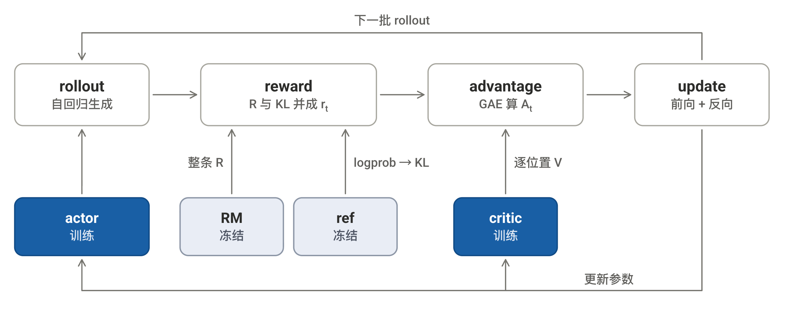
减负因此只有两个方向：动负载（§1.1），或换模型（§1.2）；每个算法 = 两个方向上的一次组合（§1.3）。
1.1 方向一：动负载
核心问题：rollout 留不留、留下时数据能多旧。两对术语：
- online 在线 / offline 离线：训练期间采不采新数据——在线 = 含 rollout；离线 = 数据训练前固定
- on / off-policy：训练数据出自哪版策略——on-policy = 当前这版 actor；off-policy = 旧版或别的模型
- 关系：
- 离线必然 off-policy；在线默认 on-policy
- 但 "数据多旧"是连续旋钮——ppo-epochs 复用（轻微旧）→ 异步化（大幅，plan 05 篇）→ 离线（拧到底）
选哪端由训练意图决定：
| 训练意图 | 具体指什么 | 选择 |
|---|---|---|
| 对齐 alignment | 按人类偏好回答：风格 / 语气，不求新能力 | 离线够用（形态近 SFT，差别见下） |
| reasoning | 学更难的推理（math / code），解法须自己采出才可强化 | 必须在线（01 §1.2） |
| 能力搬运 / 合并 | 强模型能力迁给小模型 / 多专家合一 | 在线（机制见 §1.2） |
代价对照：在线 = 训推双引擎；离线 = 无 rollout 推理 + 分布偏移（§2.5）。
离线 ≠ 退化为 SFT：偏好 pair 带负反馈、能压低坏回答（SFT 只有正例）；loss 也仍由 RL 目标推出（§2）。
1.2 方向二：换模型
先回顾初始 RLHF PPO 的四模型分工：actor = 被训的 LLM，rollout 和 update 都是它；critic = 逐位置估 \(V\)，供 advantage；RM = reward model 对整条打分；ref = KL 基准。逐个看能不能动：
- actor：被训对象，动不了
- ref：可选约束——对齐要，reasoning 常删（DAPO 等）
- RM / critic：仅有的两个学出来的评估器，替换的主要对象：
OPD = On-Policy Distillation
| 槽位 | 替代 | "好"的定义 | 代价 |
|---|---|---|---|
| RM（原：人类喜好） | 规则（RLVR） | 验证为对 | 限可验证任务 |
| critic | 组内统计（GRPO 等） | 不变，只换 baseline | 同奖同罚 |
| RM + critic + ref | 和另一个模型的差异 (teacher)（OPD / MOPD） | 与 teacher 相近 | student 要覆盖 teacher 的高概率区域 |
1.3 经典算法 = 组合
| 算法 | 方向一：负载 | 方向二：模型替换 / 删除 | 出发 idea |
|---|---|---|---|
| PPO-RLHF（01） | 在线 | actor、RM、critic、ref 全保留 | 全配置 baseline |
| DPO（§2） | 离线 | RM 删除，直接用偏好 pair 训练 critic 删除 |
不用跑 RL：最优策略可以直接写成公式，拿偏好数据直接训 actor（§2） |
| GRPO + 模型奖励（§3） | 在线 | RM 保留，可外部调用 critic → 组内统计 |
模型打分，组内统计替代价值估计 |
| GRPO + RLVR（纯规则，§3） | 在线 | RM → 替换为可验证规则 critic → 组内统计 |
规则判分，组内统计算 advantage |
| ↳ DAPO（§3.6） | 在线 | 沿用 GRPO，额外 ref删除 → 去掉 KL 约束 |
允许偏离初始模型，改进长回答训练 |
| OPD / MOPD（§4） | 在线 | RM → teacher 反馈 critic 删除 ref → teacher 对齐目标 |
能力是现成的：在 student rollout prefix 上逼近 teacher（§4） |
GRPO 本身只替换 critic；RM 是否保留，由奖励来源决定。DAPO 进一步取消 ref KL，规则奖励配方只需 actor。
- 按历史来源速记：
- preference / reward optimization：DPO（2023）、RLVR + GRPO（2025）
- knowledge distillation：GKD / MiniLLM（2023）、post-training OPD（2025）、MOPD（2026）
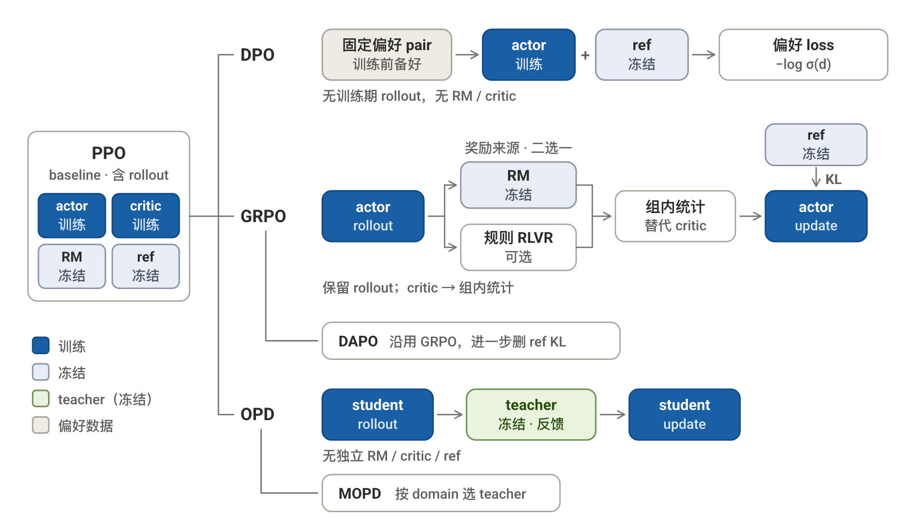
2. DPO: 删 rollout（连 RM、critic 一起）
DPO 的训练结论很简单，但数学推导较长。只想掌握设计和具体计算时，读完 §2.1 可以直接跳到 §2.4；§2.2–2.3 负责推导 loss 为什么成立。
2.1 设计 idea 与 loss 结论
回顾 RLHF-PPO 的四模型设计：RM 先用偏好 pair 学会打分，PPO 再拿这个分训练 actor。
DPO（Direct Preference Optimization，直接偏好优化，2023）的出发点是跳过 RM。直接用原本训练打分的偏好数据训练 actor。
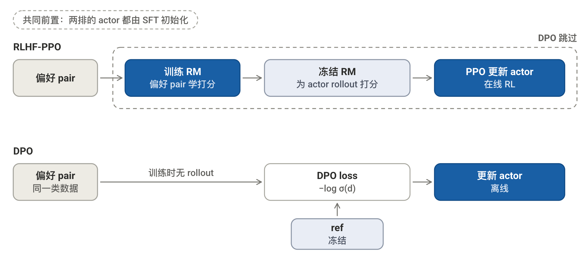
先看训练形态： \((x,y)\) 可被理解为 (prompt, response)
| SFT | RLHF-PPO（01） | DPO | |
|---|---|---|---|
| 数据来源 | 固定的 \((x,y)\) 演示 | actor 对 \(x\) 现采 \(y\) | 固定的 \((x,y_{\text{chosen}},y_{\text{rejected}})\) 偏好 pair |
| §1.1 定位 | 监督学习 | 在线、on-policy | 离线、off-policy |
| 模型输入 | prompt + response | prompt (自己 rollout response) | prompt + chosen / rejected |
| response 段取数 | 每个实际 token 的 logprob | logprob，另取 \(V\) 和 RM 打分 | actor / ref 的 logprob，再按整条求和 |
| 监督信号 | token 级 GT，只有正例 | 整条标量 reward，无 GT | pair 级 GT：chosen 获胜（\(z=1\)）；无 token 级 GT |
| loss | 逐 token CE | \(A_t\) 加权的 ratio + clip | \(-\log\sigma(\hat r_{\text{chosen}}-\hat r_{\text{rejected}})\) |
DPO 的前向形态接近 SFT。两者都把数据集里的 prompt + response 做 teacher-forcing，只计算 response 段。
区别在 loss：SFT 把 response token 当 GT 做 CE；DPO 只有“chosen 获胜”这个 pair 级对比作为 GT。
和 PPO 相比，主要差别是数据谁来采：
- PPO：训练期间由当前 actor rollout，再由 RM 打分
- DPO：训练前备好偏好 pair，训练期间不再 rollout
因此 DPO 省掉了 cost 最高的 rollout，也一并省掉 RM 和 critic。代价是没有探索，本文把它放在 alignment 对齐档。
但值得注意的是，DPO 虽然和 SFT 很像，但仍是从 RLHF 的目标推出，不是 SFT CE 的变体。
[计算结论]
对偏好 pair \((x,y_{\text{chosen}},y_{\text{rejected}})\)，actor 和 ref 分别前向两条 response。每个位置都会输出 token 概率分布；只取 response 实际 token 的 logprob，再沿整条求和，得到四个 seq logprob：
- \(\log\pi_\theta(y_{\text{chosen}}\mid x)\)：当前 actor 对 chosen 的整条 logprob；越大表示越容易生成它
- \(\log\pi_\theta(y_{\text{rejected}}\mid x)\)：当前 actor 对 rejected 的整条 logprob；越大表示越容易生成它
- \(\log\pi_{\text{ref}}(y_{\text{chosen}}\mid x)\)：冻结 ref 对 chosen 的整条 logprob，作为训练前基准
- \(\log\pi_{\text{ref}}(y_{\text{rejected}}\mid x)\)：冻结 ref 对 rejected 的整条 logprob，作为训练前基准
这里的 \(\log\) 是对概率取自然对数，不是 logit。同一条 response 的 actor / ref logprob 差，表示 actor 相对 ref 改变了多少偏好；再用 chosen 的变化减去 rejected 的变化，得到抽象分差：
我们认为分差 \(d\) 越大，chosen 越容易获胜。Bradley–Terry（BT）偏好模型用 sigmoid 把这个分差转换成预测概率：
偏好数据给出的 pair 级 GT 是 chosen 获胜。写成二分类 one-hot，目标为 \([1,0]\)：chosen 类的目标概率为 \(1\)，即 \(z=1\)。代入 CE 后，\((1-z)\) 项消失：
loss 的直接意义是：模型越确信 chosen 获胜，loss 越小。外层 \(\log\) 也是真正的自然对数。最小化 loss 会推大 \(d\)：
反向传播也沿用普通模型的计算图：Loss 本来就是 response token logprob 计算出来的，因此梯度会分到 chosen / rejected 的每个 token，再经 token logits 回传到共享的 actor 参数。ref 冻结，不接收梯度。训练时对 batch 内各 pair 的 loss 求平均。
所以 DPO 的数据、前向和 loss 都很简单：固定偏好 pair、四个 seq logprob、一个二分类 CE。
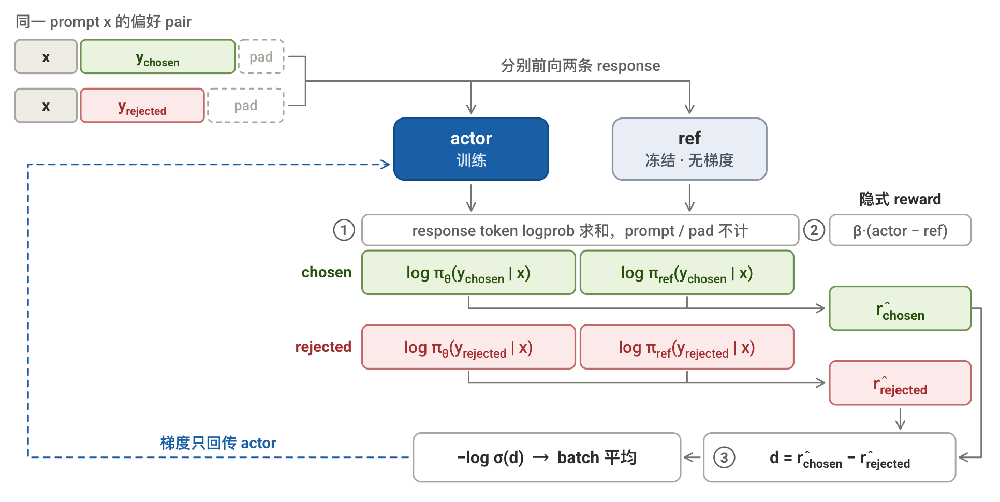
详细 Loss 推导可见§2.2–2.3，也可以直接跳到 §2.4。
2.2 共同起点：从 \(J_0\) 到 \(J_{\text{KL}}\)
01 §3.1 已讲过 \(J_0\rightarrow J_{\text{KL}}\) 及两者的梯度。本节只回忆 DPO 与 PPO 共用的 seq 级目标。
下图沿用 01 §3.0 末尾的 PPO 流程，只突出共同前缀和 DPO 的分叉点。
[共同的 seq 级目标]
PPO 的裸目标 \(J_0\) 要求 actor 生成的 response 平均 RM 分尽量高：
只最大化 RM 分，actor 可能偏离训练起点。加入相对冻结 ref 的 KL 软惩罚，得到完整目标：
\(J_0\rightarrow J_{\text{KL}}\) 改的是 seq 级优化目标。PPO 后续估计它的梯度；DPO 从同一个 \(J_{\text{KL}}\) 进入 §2.3，改为求最优策略形式。
[相比 PPO：只剩 actor + ref]
DPO 不进入图中灰色的 PPO 后续。01 的四模型系统因此缩成两个模型：
- actor：保留并训练。对 chosen / rejected 计算 seq logprob
- ref：保留并冻结。提供 actor 相对训练起点改变了多少的基准
- critic：删除。DPO 不进入 \(A_t\) 支路，不需要 \(V(s_t)\) 或 GAE
- RM：删除。偏好 pair 直接给出 chosen / rejected 标签；§2.3 再把 actor / ref 的相对 logprob 写成隐式 reward 分差
由于 DPO 不再通过 \(\nabla_\theta J_{\text{KL}}\) 求解，因此也不用 rollout 了——PPO 中的 rollout 是为了通过蒙特卡洛采样估计这个梯度；而 DPO 直接由 \(J_{\text{KL}}\) 的最大化条件推导最优策略形式。
2.3 DPO 分支：从最优策略到偏好 loss
下文把一条 response 的抽象 reward 统一记为 \(r(x,y)\)。DPO 的改写链只有四步：
最优策略公式 \(\rightarrow\) 反解 reward \(\rightarrow\) pair 相减消掉 \(Z(x)\) \(\rightarrow\) 代入偏好 loss
[第 1 步：得到最优策略公式]
结论先行，把 §2.2 的 \(J_{\text{KL}}\) 对策略分布求最大值，可以推出：
这个公式来自“最优分布已经无法通过继续腾挪概率提高 \(J_{\text{KL}}\)”的 idea；完整求导放在下面的折叠区。
上标 \(*\) 表示“取到最优值”，所以 \(\pi^*\) 是最优策略。
逐项读：
- \(\pi^*(y\mid x)\)：最优策略给出 response \(y\) 的概率
- \(\pi_{\text{ref}}(y\mid x)\)：冻结的 ref 给这条 response 的基础概率
- \(e^{r(x,y)/\beta}\)：reward 带来的调整倍数；reward 越高，倍数越大，\(\beta\) 越大，调整越弱。
- \(1/Z(x)\)：同一 prompt x下所有 response 共享的抽象函数；固定 ref、reward 函数和 \(\beta\) 后，它只和 \(x\) 相关，具体值和含义不需要在这里理解（因为第二步它会被消掉）
结论是：最优策略以 ref 为基础，再按 reward (x, y) 重新调整每条 response 的概率。reward 越高，这条 response 相对 ref 得到的概率提升越大。
展开推导：为什么能得到这个公式？
先固定 prompt \(x\)，把所有可能的完整 response \(y\) 想成一张表。对表里的第 \(i\) 条 response：
- \(y_i\)：这条完整 response
- \(p_i=\pi(y_i\mid x)\)：策略分给 \(y_i\) 的概率，也是这里要调整、求解的量
- \(q_i=\pi_{\text{ref}}(y_i\mid x)\)：冻结的初始模型 ref 分给同一条 \(y_i\) 的概率，固定不变
- \(r_i=r(x,y_i)\)：这条 \(y_i\) 的 reward，固定不变
因此，只有 \(p_i\) 是待优化的量；\(q_i\) 和 \(r_i\) 都是已知条件。\(p_i\) 是策略给一条可能 response 分配的概率。
上标 \(*\) 表示“已经取到最优值”。所以 \(p_i^*\) 就是优化结束后，最优策略分给 \(y_i\) 的概率。
先把 §2.2 最后的共同目标完整写回来：
它的直接含义仍是：让策略生成的 response 平均 reward 更高，同时限制策略偏离 ref。
现在固定 \(x\)，把 reward 期望和 KL 都改写成对整张 response 概率表的求和：
原目标写成 \(\max_\theta\)，因为参数 \(\theta\) 决定整张概率表。这里暂时直接求最优的 \(p_i\)，目的是找出最优分布应满足的关系。
为什么要求导？ 先从“最优”本身出发。任取两条 response，从 \(y_j\) 挪一小份概率 \(\epsilon\) 给 \(y_i\)：
一加一减后，概率总和仍是 1。如果这次腾挪还能提高 \(J_x\)，当前分布就不是最优。最优分布就是：任意两条 response 之间都已经“挪无可挪”。
为了判断这次腾挪会让 \(J_x\) 怎样变化，先记
\(g_i\) 表示多给 \(y_i\) 一点概率时，整个目标 \(J_x\) 的变化率。所以从 \(y_j\) 挪一小份概率 \(\epsilon\) 给 \(y_i\)，这次腾挪带来的净收益是
最优策略的 \(p^*\) 已经挪无可挪（极大值），所以对任意 \(i,j\)，这次合法腾挪的导数都为 0：
差值为 0，就表示两个导数相同。由于任意一对 \(i,j\) 都成立，所以：
固定 prompt \(x\) 后，这个共同值不再随具体 response 改变，因此把它记为 \(C(x)\)。
把 \(g_i\) 的具体公式代回最优点：
下面把从 \(C(x)\) 到 \(Z(x)\) 的改写合在一起：
最后用 \(\sum_i p_i^*=1\) 求和代入：
所以，\(Z(x)\) 可以看成 \(C(x)\) 与超参 \(\beta\) 的等价改写；固定其他条件后，它同样只随 prompt \(x\) 改变。代回 \(p_i^*\)，再换回原来的记号：
这一步不要求 DPO 真正枚举所有 response 或计算 \(Z(x)\)。它只提供第 2 步需要的 reward、最优策略与 ref 之间的关系。
[第 2 步：消去 \(Z(x)\)，得到可计算分数差]
第 1 步得到：
\(Z(x)\) 只和 prompt 有关。偏好 pair \((x,y_{\text{chosen}},y_{\text{rejected}})\) 中，两条 response 共用 \(x\)，也就共用同一个 \(Z(x)\)。
对公式取 log、移项：
记 \(r_{\text{chosen}}=r(x,y_{\text{chosen}})\)、\(r_{\text{rejected}}=r(x,y_{\text{rejected}})\)。两式相减，共同的 \(\beta\log Z(x)\) 消失，得到：
因此，DPO 不需要绝对 reward 或 \(Z(x)\)，只需要 pair 的相对分数。
训练时用 actor \(\pi_\theta\) 表示待求的 \(\pi^*\)，并定义单条 response 的隐式 reward：
真正用于训练的是两条隐式 reward 的分数差：
训练只关心 \(\hat r_{\text{chosen}}-\hat r_{\text{rejected}}\)，不单独拟合某条 \(\hat r\)。
[第 3 步：把分数差变成 loss]
记分数差 \(d=\hat r_{\text{chosen}}-\hat r_{\text{rejected}}\)。\(d>0\) 表示 chosen 分数更高；\(d\) 越大，模型对 chosen 的相对偏好越强。
不能直接把 \(d\) 当分类 loss。最小化 \(-d\) 时，\(\partial(-d)/\partial d=-1\)，会持续拉大分差。它也不对应获胜概率。
01 §4.1 训练 RM 时已经处理过同一种输入：两条 response 各有一个分数，标签是 chosen 获胜。做法是用 Bradley–Terry（BT）偏好模型 把分数差映射成获胜概率：
RM 用显式分差 \(r_w-r_l\)；DPO 只把它换成隐式分差 \(d\)。当前 pair 的标签恒为 chosen 获胜，代入二分类 CE：
再代入 \(d=\hat r_{\text{chosen}}-\hat r_{\text{rejected}}\)，得到单个 pair 的 DPO loss：
外层 \(-\log\) 是 pair 级二分类 CE，不是另一层 token logprob。训练时对 batch 内各 pair 的 loss 求平均。
2.4 手写 DPO
先把 §2.3 的推导压成实际计算顺序：
- \(\log\pi_\theta(y\mid x)\)：actor 对 \(y\) 的 seq logprob
- \(\log\pi_{\text{ref}}(y\mid x)\)：ref 对 \(y\) 的 seq logprob
- \(\hat r_\theta(x,y)\)：\(y\) 的隐式 reward
- \(\sigma(d)\)：Bradley–Terry（BT）偏好模型根据分差 \(d\) 算出的 chosen 获胜概率
- \(\beta\)：超参
和 01 §4.3 的关系：在场模型只剩 actor（训练）和 ref（冻结），都是 01 篇的 Actor 类；训练直接 sft_logprob 原样复用。
高频手撕是 dpo_loss；dpo_step 熟悉结构即可。
def dpo_loss(
logp_chosen,
logp_rejected,
ref_logp_chosen,
ref_logp_rejected,
beta=0.1,
):
"""
DPO loss（§2.3）：RM 的 BT loss + 隐式 reward r̂ = β·log(π/ref)
参数:
- logp_chosen / logp_rejected: actor 给两条 response 的整条 logprob，形状为 (B,)
- ref_logp_chosen / ref_logp_rejected: ref 的同款，形状为 (B,)
- beta: 隐式 reward 的温度，即 01 §3.2 KL 惩罚系数的那个 β
返回:
- 标量 loss；margin = r̂_chosen − r̂_rejected 的均值（训练观测指标）
"""
r_chosen = beta * (logp_chosen - ref_logp_chosen)
r_rejected = beta * (logp_rejected - ref_logp_rejected)
margin = r_chosen - r_rejected
loss = -F.logsigmoid(margin).mean() # -log σ(r̂_chosen - r̂_rejected)
return loss, margin.mean()
def seq_logprob(model, ids, p_len, mask):
"""整条 response 的 logprob：01 的 sft_logprob 对有效位求和"""
return (sft_logprob(model, ids, p_len) * mask).sum(-1) # (B,)
def dpo_step(
ids_chosen,
mask_chosen,
ids_rejected,
mask_rejected,
p_len,
):
"""
一个 DPO step：4 次 teacher-forcing 前向 + 1 次反向；无生成、无采样
参数:
- ids_chosen / ids_rejected: prompt 拼两条 response 的完整序列，形状为 (B, T)
- mask_chosen / mask_rejected: response 段有效位 mask，形状为 (B, T_resp)
- p_len: prompt 长度
"""
logp_chosen = seq_logprob(actor, ids_chosen, p_len, mask_chosen) # 带梯度
logp_rejected = seq_logprob(actor, ids_rejected, p_len, mask_rejected)
with torch.no_grad(): # ref 冻结, 只前向
ref_chosen = seq_logprob(ref, ids_chosen, p_len, mask_chosen)
ref_rejected = seq_logprob(ref, ids_rejected, p_len, mask_rejected)
loss, margin = dpo_loss(
logp_chosen,
logp_rejected,
ref_chosen,
ref_rejected,
)
opt.zero_grad(); loss.backward(); opt.step()
return loss.item(), margin.item() # margin 应随训练上涨
对比 01 的 ppo_step：
- 没有 rollout 段，没有四模型 no-grad 前向；experiences 的概念消失，数据就是数据集本身
- 显存 = 一个训练态模型 + 一个冻结模型（7B 下 ~126 GB，对比 01 §5.1 的 ~250 GB），且无推理引擎、无权重同步
- \(\beta\) 一个超参串两个角色：推导里的 KL 系数 = loss 里的隐式 reward 温度
2.5 代价与变体
[两个核心边界]
DPO 的两个核心边界，分别来自固定偏好数据和只比较分差：
- 分布偏移：偏好 pair 训练前固定；actor 持续更新，却不会重新采样。数据集未覆盖的实际生成区域没有训练信号
- 绝对概率不受约束：BT loss 只要求 chosen / rejected 的 margin 增大。两者 logprob 可以同时下降，只要 rejected 降得更快
定位：适合风格 / 安全等 alignment；需要探索新解的 reasoning 仍用 on-policy RL。
[变体：分别改哪一处]
| 变体 | 改哪一处 | 主要目的 |
|---|---|---|
| IPO | BT loss → 固定 margin 的平方回归 | 不再无限拉大 margin |
| KTO | pair → 单条回答的好 / 坏标签 | 降低标注门槛 |
| SimPO | 删 ref，改用长度归一的 actor logprob + 固定 margin | 少一个冻结模型 |
| ORPO | 偏好 loss 并入 SFT | 删 ref 与独立对齐阶段 |
| Online / Iterative DPO | 用当前 actor 重新采样、重新标注 | 缓解分布偏移；重新引入生成 |
3. GRPO (+RLVR): 替换critic (与RM)
§2 的 DPO 从方向一减少负载：删掉 rollout，直接用固定偏好数据训练。
但训练期间也不再 rollout，失去了在线探索。要探索并强化新的解法，就仍需保留 rollout。
这一节转向方向二（§1.2）：保留 rollout，减少在场模型。
- GRPO：critic → 组内统计。用同一 prompt 下多条回答的 reward 计算 advantage，放弃计算 token 级优势 的critic。
- 可选 RLVR：RM → 可验证规则。任务能由规则判分时，再省掉 RM。
衍生方法 DAPO 进一步去掉 ref KL，并改进长回答训练（§3.6）。
GRPO 仍可使用 RM；采用 RLVR 时，再用规则替换 RM。由于 DeepSeek-R1 的推理训练采用了这一组合，因此下文一起介绍。
只想拿结论与手写，读完 §3.1 可以直接跳 §3.4；§3.2–3.3 分别解释 reward 与 advantage 的替换。
3.1 从 PPO 四模型出发：两处替换
对照 01 §4.2 的四模型表：
| PPO 部件 | 原职责 | 处理 | 结果 |
|---|---|---|---|
| actor | rollout、更新策略 | 改为每个 prompt 采 \(G\) 条 | ✅ 训练 |
| RM | 给 response 打分 | 可选 RLVR：RM → 可验证规则 | 默认保留；配 RLVR 时删除 |
| critic | 估值，供 GAE 算 advantage | GRPO：critic → 组内统计 | ❌ 删除 |
| ref | 提供 KL 基准 | 原版 GRPO 保留；DAPO 删除（§3.6） | ❄️ 冻结（原版） |
step 仍分四段：GRPO 改 advantage，RLVR 可选改 reward 来源：
- rollout（推理 - 保留）：actor 对同一 prompt \(x\) 采 \(G\) 条 \(y_i\)，由单条改为组采样
- reward（打分 - 可选替换）：RM 逐条给分 \(R_i=R(x,y_i)\)；采用 RLVR 时换成 verifier（§3.2）
- advantage（训练前向 - 替换）：组内标准化 reward 得到 seq 级 \(A_i\)，替代 critic + GAE 的 token 级 \(A_t\)（§3.3）
- update（训练前后向，保留）：\(A_i\) 接进 ratio + clip 更新 actor；KL 项换了位置（§3.4）
GRPO 保留 actor、RM、ref；配纯规则 RLVR 后只剩 actor、ref。不同于 DPO，rollout 仍在，每个 prompt 采 \(G\) 条。
[最终 loss]
目标仍同 PPO/DPO：\(J_{\text{KL}}=J_0-\beta\,\text{KL}\)（01 §3.1），GRPO 将两部分分开处理：
- \(J_0\) 半边（权重线）：reward \(R_i\)（§3.2）→ 组内标准化得 seq 级 \(A_i\)（§3.3）→ 接 ratio + clip（§3.4）
- KL 半边：不进权重，单独加入 loss（§3.4）
3.2 RLVR (可选)：RM → 可验证规则
RM 用模型判断回答好坏；math / code 中可验证的任务，可以直接由程序判分。
RLVR（Reinforcement Learning with Verifiable Rewards，可验证奖励强化学习）用判定程序 verifier 替代 RM。例如：
| 任务 | verifier |
|---|---|
| 数学 | 抽取最终答案，与标准答案比对 |
| 代码 | 运行测试，检查是否通过 |
以数学任务为例，每条回答的 reward 为：
- accuracy：答案正确得 1，否则得 0。
- format：检查输出格式；可选，不用时 \(\alpha=0\)。
这里的 verifier 无需训练，省去独立 RM。\(R_i\) 仍同 01 的 \(r_{\text{RM}}\)：整条回答一个分，不含 KL。
RLVR 决定奖励来源，GRPO 决定如何更新。 RLVR 可配 PPO 或 GRPO；GRPO 也可继续用 RM。规则难以判分时，仍可使用模型奖励，如 R1 的全场景阶段（§3.5）。
3.3 GRPO：critic + GAE → 组内 advantage
不想回顾详细公式的话，可以直接跳到 3.4
reward model 给出的 \(R_i\) 是 seq 级的分。PPO 拿到这样一个分之后，还有一整套“摊到 token级”的设计——GRPO（Group Relative Policy Optimization）改的就是这一段。
GRPO 将 advantage 从 token 级改为 seq 级，省去估计 token 级预期 \(V(s_t)\) 的 critic 模型；同时用组内统计构造 seq 级“预期差值” \(A_i\)。
[回顾：整条分数怎样用于 token 更新]
沿用 01 的目标：最大化 \(J_{\text{KL}}\)。提高平均得分，同时用 KL 限制 actor 偏离原始 ref。
复用 01 §3.1 的理论梯度结论，将 seq logprob 展开为 token logprob 之和：
展开的是 logprob，权重仍是整条回答的 \(R_{\text{KL}}\)。
- PPO 将“所有 token 共用权重”改为“每个 token 按自己的 advantage 加权”：critic 估计各位置的预期得分 \(V(s_t)\)，GAE 据此计算 \(A_t\)（01 §3.2–3.4）。
- GRPO 则保留同一回答共用权重的形式，改用 组内统计构造 advantage。
[GRPO：用组内统计构造 seq 级 advantage]
同一 prompt 采 \(G\) 条回答，各得任务分数 \(R_i\)。以组均分 \(\bar R\) 作基准，再除以组内标准差 \(\sigma_R\)：
- 减组均分：\(A_i>0\) 表示高于同组平均，\(A_i<0\) 表示低于平均。
- 除标准差：按组内分数的离散程度调整尺度；\(\varepsilon\) 防除零。
- 共用权重：同一回答的全部 token 使用一个 \(A_i\)，无需 critic 逐位置估值。
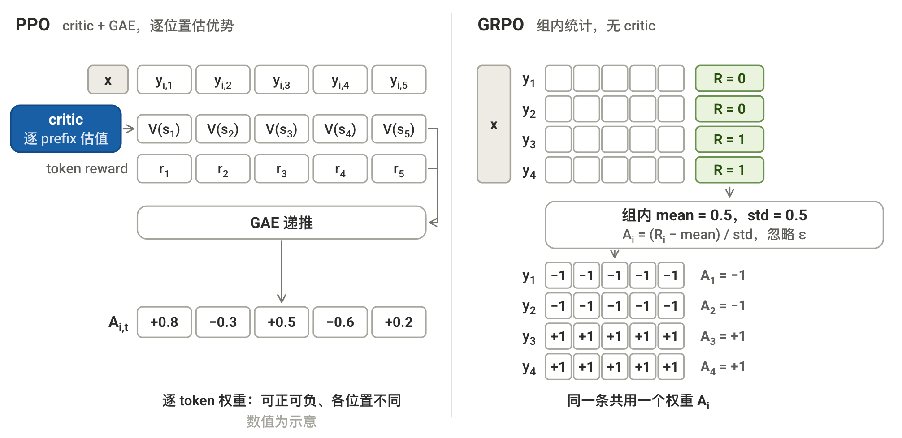
[接回 loss]
同一回答的所有 token 共用上文算出的 seq 级 \(A_i\)。更新由两部分组成：ratio + clip 加权的 advantage，以及单独的 KL 惩罚。
暂略 clip 与长度归一，loss 骨架为（完整形式见 §3.4）：
[第一项：ratio + clip]
回顾 01 §3.5：ratio + clip
同一批 rollout 更新多次，当前 actor 已不同于采样时的旧策略。下面沿用其计算方式：ratio 用新旧概率比作修正，clip 限制更新幅度。
ratio：
\[ \rho_{i,t} =\frac{\pi_\theta(y_{i,t}\mid x_i,y_{i,<t})} {\pi_{\mathrm{old}}(y_{i,t}\mid x_i,y_{i,<t})} =\exp(\text{new\_logp}_{i,t}-\text{old\_logp}_{i,t}) \]分子是当前 actor 的概率，分母是采样时保存的旧概率；两者针对同一位置、同一个 token。
clip 限制继续强化的幅度。PPO 的 \(A_{i,t}\) 由 critic + GAE 计算，每个 token 的更新项为：
\[ \min\left( \rho_{i,t}A_{i,t},\; \operatorname{clip}(\rho_{i,t},1-\epsilon,1+\epsilon)A_{i,t} \right) \]
- \(A_{i,t}>0\)：ratio 超过上界后，不再鼓励提高概率。
- \(A_{i,t}<0\)：ratio 低于下界后，不再鼓励降低概率。
它限制的是更新激励，不是概率的硬边界。
GRPO 将其中的 \(A_{i,t}\) 换成整条回答共用的 \(A_i\)。
[第二项：KL 惩罚]
PPO 的 KL 随 token reward 进入 advantage；GRPO 的 \(A_i\) 不含 KL，因此在 loss 中单独加上逐 token 的 KL 惩罚 \(\mathbb D^{\text{KL}}_{i,t}\)。
01 的 PPO 用 k1，即 actor 与 ref 对实际采到的 token 的 logprob 差：
GRPO 改用 k3。记 \(r_{i,t}=\pi_{\text{ref},i,t}/\pi_{\theta,i,t}\)，在 k1 上加修正项 \(r_{i,t}-1\)：
这一修正同时带来三个性质（不太懂，但照做吧）：
- 期望不变：按当前 actor 分布采样时，修正项的期望为零，仍估计同一个 KL。
- 逐样本非负：\(r-1-\log r\ge0\)。
- 接近 ref 时通常降低方差：修正项抵消 k1 的一阶波动。
命名：k1 / k3 来自 Schulman 的 Approximating KL Divergence。
3.4 手写 GRPO
§3.2–3.3 的结论合起来，就是实际算的这条 loss：
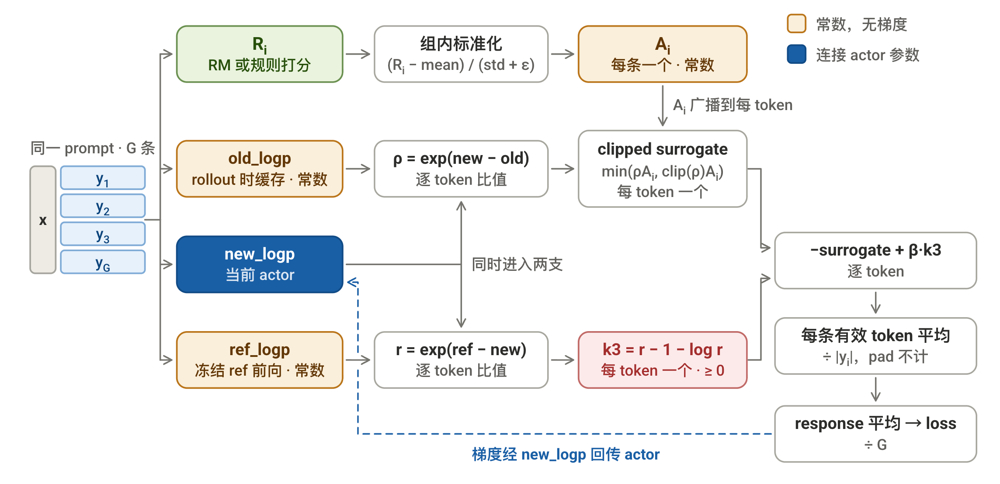
[逐项回忆]
最外面两层是 clip 和两级平均：
- clip：\(A_i>0\) 且 \(\rho_{i,t}>1+\epsilon\)，或 \(A_i<0\) 且 \(\rho_{i,t}<1-\epsilon\) 时，surrogate 的梯度被截断；反方向仍保留
- 两级平均：先 \(\tfrac1{|y_i|}\) 后 \(\tfrac1G\)，response 等权、token 不等权（代价见 §3.6）
剥掉这两层，剩下 §3.3 的骨架：
三个量：
- \(A_i\)（§3.3）：组内标准化出的 seq 级权重，广播到该条 seq 的全部 token
- \(\rho_{i,t}\)（§3.3）：token 级复用修正，实现取 \(\exp(\log\pi_\theta-\log\pi_{\text{old}})\)；管每个 token 的新旧偏差
- \(\pi_{\text{old}}\)：采这批 rollout 时的 actor，复用期间当常数（01 §3.5 的 \(\pi_{\theta_{\text{old}}}\)）
- \(\mathbb D^{\text{KL}}_{i,t}\)（§3.3）：k3 估计，\(u_{i,t}=\log\pi_{\text{ref}}-\log\pi_\theta\)；逐 token 恒非负，可当惩罚项
- 超参：\(\epsilon\) = clip 半径，\(\beta\) = KL 强度，\(\varepsilon\) = 防除零（与 \(\epsilon\) 无关）
- 组合特点：seq 级权重 × token 级 ratio
[手写三个纯函数]
张量显式保留 group 维：\(B\) = prompt batch，\(G\) = 每 prompt 的 rollout 数。三个函数对上面三个量：grpo_advantage 出 \(A_i\)，grpo_kl 出 \(\mathbb D^{\text{KL}}_{i,t}\)，grpo_loss 组装。
def grpo_advantage(R, std_eps=1e-6):
"""
组内标准化得到 seq 级 advantage（§3.3）
参数:
- R: 每个 prompt 的 G 条 response reward，形状为 (B, G)
- std_eps: 防除零小常数，即 §3.4 的 ε（不是 clip 的 ϵ）
返回:
- A: 每条 response 一个 advantage，形状为 (B, G)
"""
mean = R.mean(dim=1, keepdim=True) # (B, 1) 组均值, 即 baseline
std = R.std(dim=1, keepdim=True, unbiased=False) # (B, 1) 组内标准差
return (R - mean) / (std + std_eps) # 每个 prompt 内独立归一
def grpo_kl(logp, ref_logp):
"""
k3 KL 估计（§3.3）：逐 token 恒 ≥ 0，可直接当 loss 惩罚项
参数:
- logp: 当前 actor 的 token logprob，形状为 (B, G, T_resp)
- ref_logp: ref 的同款，形状为 (B, G, T_resp)
返回:
- 逐 token 的 D^KL，形状为 (B, G, T_resp)
"""
u = ref_logp - logp # u = -k1; ref 在前, 使 exp(u) = π_ref/π_θ 这个比值
return u.exp() - u - 1 # k3 = k1 + (e^u - 1), 修正项均值为 0 故期望不变
def grpo_loss(new_logp, old_logp, ref_logp, A, mask, eps=0.2, beta=0.04):
"""
GRPO actor loss（§3.4）
参数:
- new_logp: 当前 actor 的 token logprob，唯一带梯度，形状为 (B, G, T_resp)
- old_logp: rollout 策略的 token logprob（常数），形状为 (B, G, T_resp)
- ref_logp: ref 的 token logprob（常数），形状为 (B, G, T_resp)
- A: grpo_advantage 的输出，形状为 (B, G)
- mask: 1=有效 token，0=pad，形状为 (B, G, T_resp)
- eps: clip 半径 ϵ；beta: KL 项系数 β
返回:
- 标量 actor loss
"""
ratio = (new_logp - old_logp).exp() # ρ_{i,t}, logprob 差取 exp
A = A.unsqueeze(-1) # (B,G) -> (B,G,1), 广播到整条
surr1 = ratio * A # 不截断
surr2 = ratio.clamp(1 - eps, 1 + eps) * A # 截断到 [1-ε, 1+ε]
surrogate = torch.min(surr1, surr2) # 只截断 A>0 时的上界、A<0 时的下界
kl = grpo_kl(new_logp, ref_logp) # k3, 逐 token ≥ 0
token_loss = -(surrogate - beta * kl) # 取负: 最大化目标 -> 最小化 loss
lengths = mask.sum(-1).clamp_min(1) # (B, G) 每条有效长度 |y_i|
per_seq = (token_loss * mask).sum(-1) / lengths # 先按 1/|y_i| 平均, pad 位不算
return per_seq.mean() # 再按 1/G 平均, B 维一并平均
[step 骨架]
和 01 ppo_step 相比，rollout 改为每个 prompt 采 \(G\) 条，critic + GAE 换成 grpo_advantage。
reward_fn 可以是 RM、外部打分服务或规则 verifier。本例采用规则打分，因此只需 actor 和 ref；换用 RM 时，后面的 advantage 与 loss 计算不变。
def response_mask(ids, p_len):
"""01 §4.3 ppo_step 里那两行 EOS mask 抽成函数：到首个 EOS(含) 为 1, 之后 pad 为 0"""
eos = (ids[:, p_len:] == EOS).long()
return (eos.cumsum(1) - eos == 0).float() # (B, T_resp)
def grpo_step(prompt, reward_fn, G=4, n_new=6, update_epochs=2, beta=0.04):
"""
一个 GRPO step（§3.4）：每 prompt 采 G 条 → reward_fn 打分 → 组内标准化 → ratio + clip
参数:
- prompt: 一批 prompt，形状为 (B, p_len)
- reward_fn: 打分函数，输入 (ids, p_len, mask)，每条 response 返回一个标量
- G: 每个 prompt 采几条 response；update_epochs: 同一批 rollout 复用几次
返回:
- 标量 loss；本 step 的平均 reward（训练观测指标）
"""
B, p_len = prompt.shape
# 1) rollout: 同一 prompt 复制 G 份, 每份独立采样 (推理负载)
flat = prompt[:, None].expand(B, G, p_len).reshape(B * G, p_len)
with torch.no_grad():
ids = actor.generate(flat, n_new) # (B*G, p_len+n_new)
mask = response_mask(ids, p_len) # (B*G, n_new)
R = reward_fn(ids, p_len, mask).reshape(B, G) # 2) 打分：RM / 外部服务 / 规则 verifier
A = grpo_advantage(R) # 3) 组内统计顶替 critic+GAE
old_logp = sft_logprob(actor, ids, p_len).reshape(B, G, n_new) # ρ 的分母
ref_logp = sft_logprob(ref, ids, p_len).reshape(B, G, n_new) # k3 的基准
mask = mask.reshape(B, G, n_new)
# 4) update: 同一批 rollout 复用 update_epochs 次 (训练负载)
for _ in range(update_epochs):
new_logp = sft_logprob(actor, ids, p_len).reshape(B, G, n_new) # 唯一带梯度的前向
loss = grpo_loss(new_logp, old_logp, ref_logp, A, mask, beta=beta)
opt.zero_grad(); loss.backward(); opt.step()
return loss.item(), R.mean().item() # R 均值应随训练上涨
3.5 R1：RLVR + GRPO
GRPO 出自 DeepSeekMath（2024）；DeepSeek-R1（2025）在推理训练中采用 GRPO + RLVR。论文给了两个模型：
| 做法 | 结果 | |
|---|---|---|
| R1-Zero | base 模型不做 SFT，直接 RLVR + GRPO | 输出自发变长、出现反思；可读性和语言一致性差 |
| R1 | 先用少量长 CoT（chain-of-thought）做 cold-start SFT，再 RLVR + GRPO | 可读性修好，后续再补两个阶段 |
R1-Zero 是这条线最重要的结论：不做 SFT、纯 RL 也能长出 reasoning。R1 在它之上补齐可读性和通用能力，完整流程四段：
- 拒绝采样 (rejection sampling + SFT) = 同一 prompt 采多条，用 verifier / RM 筛出好的当 SFT 数据。
- 全场景 RL (all-scenario RL) = reasoning 之外补对齐场景；通用数据没有可验证答案，这一阶段仍用 RM（RLVR用不了）。
3.6 DAPO：GRPO 的长回答训练改进
DAPO（2025）沿用 GRPO 的组内 advantage，取消 ref KL，并改进长回答训练。以下与采用正确性奖励的 GRPO 对比。原论文
回顾 §3.3–3.4：GRPO loss
loss 由 policy 项与 ref KL 惩罚组成，暂略 clip 与长度归一：
\[ \mathcal L_{\mathrm{GRPO}} \approx -\mathbb E_{i,t}[\rho_{i,t}A_i] +\beta\,\mathbb E_{i,t}[\mathbb D^{\mathrm{KL}}_{i,t}] \]
取消 ref KL：为允许长 CoT 训练明显偏离初始 ref，DAPO 删除第二项（\(\beta=0\)），不再计算 ref_logp，因此省去 ref 模型。原论文 §2.3
长回答训练的四项改进
| 环节 | GRPO | DAPO | 目的 |
|---|---|---|---|
| rollout | 一个batch中，全对／全错组 \(A_i=0\)，不补采 | 过滤该类 + 补满有效组（Dynamic Sampling） | 稳定有效组数 |
| reward | 只看对错，无长度反馈 | 软长度惩罚：上限前缓冲区内越长扣分越多（Overlong Reward Shaping） | 减少超长截断 |
| clip：\(\rho\) = 新概率 / 旧概率 | \(A_i>0\) 时，\(\rho>1.2\) 后该项不再鼓励提高概率 | 上界 \(1.2\to1.28\)，下界不变（Clip-Higher） | 给低概率 token 更多提升空间，保留探索 |
| loss 平均 | response 等权 | 有效 token 等权，长回答总权重更高（Token-level loss） | 不摊薄长回答的学习信号；强化／抑制仍由 \(A_i\) 决定 |
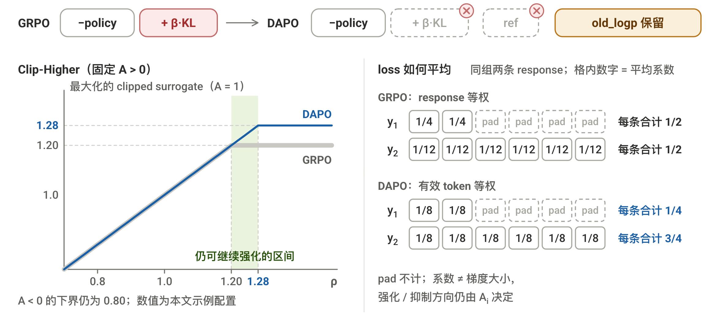
下面实现 loss 的三处变化：删除 KL、非对称 clip、token 等权。筛组补采与 reward 处理在调用前完成。实现沿用 verl 配方：
def dapo_loss(new_logp, old_logp, A, mask, eps_low=0.2, eps_high=0.28):
"""logprob / mask: (B, G, T_resp); A: (B, G)，仅 new_logp 带梯度。"""
ratio = (new_logp - old_logp).exp()
A = A.unsqueeze(-1) # 仍是一条 response 共用一个 A_i
surr1 = ratio * A
surr2 = ratio.clamp(1 - eps_low, 1 + eps_high) * A
surrogate = torch.minimum(surr1, surr2)
return -(surrogate * mask).sum() / mask.sum().clamp_min(1)
4. OPD / MOPD：on-policy 蒸馏
回顾一下蒸馏：能力已经在一个强模型里，要装进另一个模型。
4.1 普通蒸馏 vs OPD
两者都让 student 学 teacher。区别是 response 由谁生成。
[普通蒸馏：off-policy SFT]
其实就是在普通 SFT 的基础上替换了数据来源：response 的数据来源于 teacher
- 数据：teacher 提前 rollout，生成固定 response
- 训练：student 把 response 当作 GT，按普通 SFT 做 逐位的 teacher-forcing + CE
之所以叫 off-policy：response 来自 teacher，不是当前 student。
[OPD：on-policy RL]
OPD 把 response 的来源换成当前 student：
- 数据：当前 student rollout，生成 response
- 监督：teacher 在这些 prefix 上返回逐 token 信号
- 训练：student 根据 teacher 信号更新，下一批再由新 student rollout
之所以叫 on-policy：response 来自当前 student。
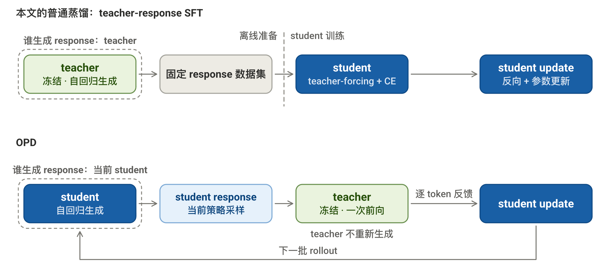
[接回 RL loop]
看一眼思路设计，会发现 OPD 自然地和 RL 对上了：
所以，actor = student；feedback 由 teacher 接管。
再对照 01 的 PPO 四模型：
| PPO 模型 | 作用 | OPD 对应 | 保留？ | 说明 |
|---|---|---|---|---|
| actor | rollout + update | student | ✔︎ | 仍需生成和训练 |
| RM | 给 seq 级反馈 | teacher feedback | ✗ | teacher 给反馈 |
| critic | 辅助定义 token级反馈 | token gap \(\Delta_t\) | ✗ | teacher 反馈已到 token级 |
| ref | KL 锚点 | teacher target | ✗ | 直接对齐 teacher |
接下来只看两件事：teacher 给什么信号，以及这个信号怎样更新 student。
4.2 逐 token 反馈
[RL 的反馈]
在 PPO-RLHF 里，RM 只给整条 response 一个 seq-level 分数。这个分数怎样摊到每个 token，由算法自定义的 return / critic / GAE 等后续步骤决定。
OPD 不同。teacher 直接给出 token-level 反馈。
[teacher 怎么给]
这一步和普通蒸馏很像，只是角色反过来了：
- 普通蒸馏：teacher rollout \(\rightarrow\) student 做 teacher-forcing + CE
- OPD：student rollout \(\rightarrow\) teacher 做 teacher-forcing，返回反馈
student rollout 出完整 response 后，teacher 一次性读入 prompt + response。causal mask 让它并行计算每个 prefix 的 next-token 分布：
\(\cdot\) 表示整个词表。这些 prefix 不需要分别跑 \(T\) 次 forward；teacher 也不重新生成 response，只做一次 SFT-style 前向。
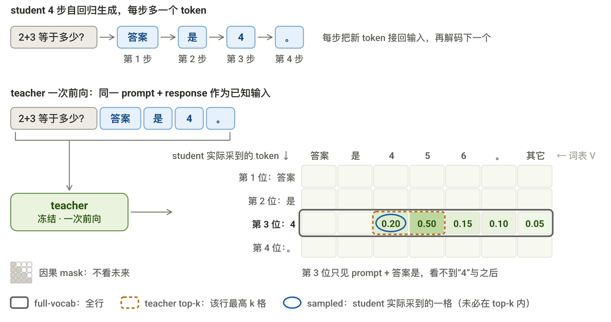
矩阵按待预测 token 对齐；“其它”仅为合并展示，loss 仍逐 token 计算。
[反馈信号范围]
设词表大小为 \(V\)。每个 token 位置上，student 和 teacher 都有 \(V\) 个 logprob。具体 recipe 决定读取范围：
| 范围 | 词表位置怎么选 | 数量 | 常见 KL |
|---|---|---|---|
| top-\(k\) | teacher 概率最高的 \(k\) 格 | \(k\) | forward KL（截断） |
| full-vocab | 整个词表 | \(V\) | forward KL，也可 reverse KL |
| sampled token | student rollout 采到的 \(y_t\sim p_S\) | \(1\) | reverse KL（Monte Carlo） |
- top-\(k\) / full-vocab：在同一个 prefix 的词表维度上，top-\(k\) / full-vocab 的 \(k\) / \(V\) 项是确定的，可以直接求和。
- sampled token：每次只有一个随机项，因此要在 batch / rollout 中对多个样本取平均。
这也是常见搭配的来源：forward KL 按 \(p_T\) 加权；reverse KL 按 \(p_S\) 加权。
4.3 Token 级 Loss 两种更新
沿用一条完整 response：
| 内容 | |
|---|---|
| prompt \(x\) | “\(2+3\) 等于多少？” |
| student response \(y_{1:T}\) | “答案” \(\rightarrow\) “是” \(\rightarrow\) “4” \(\rightarrow\) “。” |
下面只放大第 \(t=3\) 个位置。此时 prefix \(s_3=(x,y_1,y_2)\)，也就是 prompt + “答案是”。
teacher 和 student 在这里各有一张 next-token 概率表：
| 4 | 5 | 6 | 。 | 其它 | |
|---|---|---|---|---|---|
| student \(p_S\) | 0.30（采到） | 0.40 | 0.15 | 0.10 | 0.05 |
| teacher \(p_T\) | 0.20 | 0.50 | 0.15 | 0.10 | 0.05 |
下面分别看词表多格（top-\(k\) / full-vocab）和一格（sampled token）怎样计算 Loss + 更新 student。
[多格 top-\(k\) / full-vocab ：直接计算]
对于词表：top-\(k\) 枚举teacher 概率的前 \(k\) 格，full-vocab 枚举全部 \(V\) 格。
此处使用常见的 forward KL。\(v\) 是一个词表 token；\(\mathcal K\) 是保留的格子。
teacher 已冻结。所以真正把梯度传入 student 的部分只有：
\(\log p_S(v)\) 由于是所有词表位 softmax 加权的结果，因此梯度可随之传到所有词表位。
[一格 sampled token：均值估计]
反正计算方法的 demo 在那，就这么记着计算流程吧
sampled token 由 \(p_S\) 采样（只取词表中的 1 格），使用 reverse KL 中的 \(p_S(v)\) 权重：
- \(y\sim p_S\) 表示 \(y\) 由 student policy 采样；
- \(\mathbb E\) 表示对采样取平均，一次 rollout 只得到右侧的一项
但注意不能直接 backward：\(y\) 是离散样本，\(p_S(v)\) 不能显式写出，只能隐藏在采样频率中。梯度只剩 \(\nabla\log p_S(y)\)，其期望为 \(0\)。
因此要把 teacher / student 的差值当作更新系数：
对这次采到的“4”：
\(\Delta_3<0\)，所以压低“4”；若为正，就推高。\(\operatorname{sg}\) 表示 detach：差值只决定升降，梯度只经过最后的 student logprob。
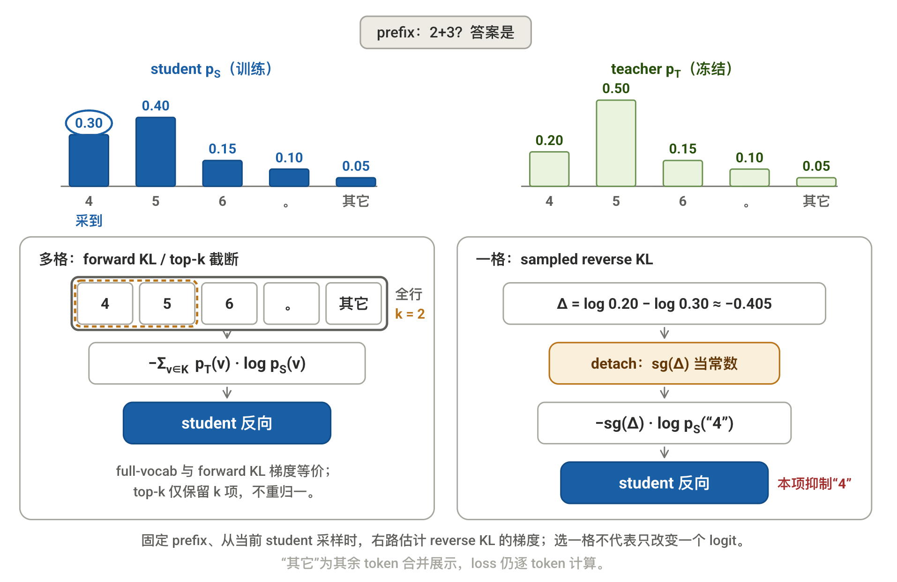
4.4 MOPD：按 prompt 选 teacher
[teacher 从一个到多个]
OPD 默认只有一个 frozen teacher。MOPD（Multi-Teacher On-Policy Distillation，Xiaomi MiMo, 2026）则准备多个 domain teacher，但仍只训练一个 student。比如：
- \(T_{\text{math}}\) 负责 math prompt
- \(T_{\text{IF}}\) 负责 instruction-following prompt
- \(T_{\text{SWE}}\) 负责 SWE prompt
每个 teacher 只强化自己的场景，也可以采用不同的 RL 训练方式。
[按 prompt 路由]
训练数据中的 prompt \(x\) 自带场景标签 \(d(x)\)。这个标签直接决定本条 rollout 使用哪个 teacher：
每条 prompt 只调用一个 teacher，其余 teacher 不参与。
[蒸馏不变]
teacher 选好后，后续就是普通 OPD：
选中的 teacher 仍按 §4.2 返回词表信号：
- sampled token：读取 student 实际采到的 \(1\) 格
- top-\(k\)：读取 teacher 概率最高的 \(k\) 格
选完 teacher 后，各分支的 loss 和 update 都沿用 §4.3；MOPD 只替换 teacher index。不同 domain 的监督最终更新同一个 student。
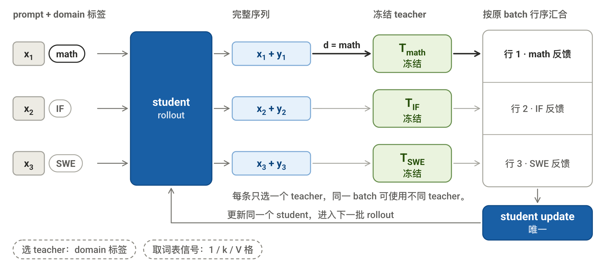
4.5 手写 OPD / MOPD
下面只实现 sampled-token 分支。top-\(k\) / full-vocab 沿用同一 loop，改 teacher 返回范围与 loss。
这里继续复用 01 的 sft_logprob。它让模型对 prompt + response 做一次 teacher-forcing，再取出 response 实际 token 的 logprob。输出形状为 (B, T_resp)。
[完整 step]
下面每批 rollout 只更新一次，所以不需要 old / new ratio 或 PPO clip。
@torch.no_grad()
def routed_teacher_logp(ids, p_len, domain_ids=None):
"""
选 teacher 并做一次 teacher-forcing（§4.4）；domain_ids=None 即单 teacher 的 OPD
参数:
- ids: student rollout 出的 prompt + response，形状为 (B, T)
- domain_ids: 每条 prompt 的场景标签 d(x)，形状为 (B,)
返回:
- 选中 teacher 给 response 段的逐 token logprob，形状为 (B, T_resp)
"""
if domain_ids is None:
return sft_logprob(teacher, ids, p_len) # OPD: 只有一个 teacher
out = torch.empty(ids.shape[0], ids.shape[1] - p_len, # MOPD: 先开好 (B, T_resp)
device=ids.device, dtype=torch.float32)
for d in domain_ids.unique().tolist(): # 每条 prompt 只进一个 teacher
rows = domain_ids == d
out[rows] = sft_logprob(teachers[d], ids[rows], p_len)
return out
def opd_step(prompt, domain_ids=None, n_new=16):
"""
一个 OPD / MOPD step（§4.5）：student rollout → teacher 逐 token 反馈 → 更新 student
参数:
- prompt: 一批 prompt，形状为 (B, p_len)
- domain_ids: MOPD 的场景标签；None 时走单 teacher 的 OPD
返回:
- 标量 loss；平均 |Δ_t|（训练观测指标，应随训练下降）
"""
p_len = prompt.shape[1]
with torch.no_grad():
ids = student.generate(prompt, n_new) # 1) 当前 student rollout
mask = response_mask(ids, p_len) # §3.4 那个 EOS mask
teacher_logp = routed_teacher_logp(ids, p_len, domain_ids) # 2) 选 teacher; 3) 一次前向
student_logp = sft_logprob(student, ids, p_len) # 4) 唯一带梯度的前向
loss, delta = sampled_opd_loss(student_logp, teacher_logp, mask)
opt.zero_grad(); loss.backward(); opt.step()
gap = (delta.abs() * mask).sum() / mask.sum().clamp_min(1) # 观测指标: 平均 |Δ_t|
return loss.item(), gap.item() # gap 应随训练下降
MOPD 只多出中间的 domain routing。所有 teacher 的反馈拼回同一个 teacher_logp 后，loss 与单 teacher OPD 相同。
[sampled loss]
def sampled_opd_loss(student_logp, teacher_logp, mask):
"""
sampled-token OPD loss（§4.3）：gap 只定升降，梯度只走 student logprob
参数:
- student_logp: student 给 rollout 实际 token 的 logprob，唯一带梯度，形状为 (B, T_resp)
- teacher_logp: teacher 给同一批 token 的 logprob，形状为 (B, T_resp)
- mask: 1=有效 token，0=pad，形状为 (B, T_resp)
返回:
- 标量 loss；逐 token 的 Δ_t（观测用）
"""
delta = (teacher_logp - student_logp).detach() # Δ_t > 0 推高该 token, < 0 压低
token_loss = -delta * student_logp # detach 后 Δ 是常数权重
loss = (token_loss * mask).sum() / mask.sum().clamp_min(1) # 有效位上 token 级平均
return loss, delta
delta 只决定每个 sampled token 应该推高还是压低。detach 后，梯度只经过最后的 student_logp。
5. 代码实现
toy 规模（词表 32、hidden 32、1 层），无需下载模型或数据：ipynb ｜ Colab。
核心 loss 对应本文 §2.4、§3.4、§3.6、§4.5：
| 方法 | 计算顺序 | 函数 |
|---|---|---|
| DPO | 四份 seq logprob → 偏好分差 → loss | dpo_loss |
| GRPO | reward → \(A_i\)；actor / ref logprob → k3；与 ratio + clip 组装 | grpo_advantage、grpo_kl、grpo_loss |
| DAPO | 沿用 GRPO；删 KL、改 clip 与平均方式 | dapo_loss |
| OPD / MOPD | teacher − student logprob → detach 作权重 → loss | sampled_opd_loss |
MOPD 沿用 OPD loss，只增加 teacher 路由。OPD 仅实现 sampled-token 分支。
CPU 上通过 loss / 梯度与冻结检查，toy 训练结果如下：
| 方法 | 运行结果 | 含义 |
|---|---|---|
| DPO | margin：\(0.00\to3.81\) | chosen 相对 rejected 的偏好增强 |
| GRPO | 平均 reward：\(0.52\to5.96\)（上限 6） | 更常生成规则奖励的目标 token |
| OPD | 平均 \(\lvert\Delta_t\rvert\)：\(0.479\to0.063\) | 采样 token 上，student 与 teacher 的 logprob 更接近 |
GRPO 取 \(\beta=0\)；DAPO、MOPD 仅验机制，未单独训练。toy 结果不代表算法效果排名。
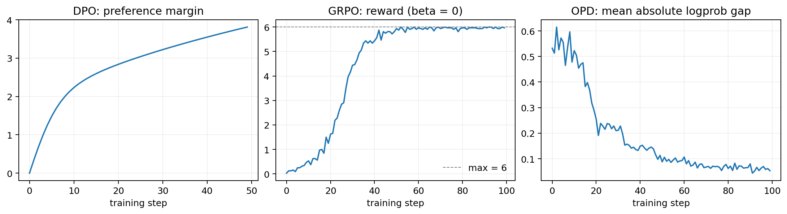